Part 2 · Spatial heterogeneity · Chapter 1
OPGD
Optimal parameters-based geographical detector
The question
Which factors explain the spatial pattern of my variable, how strongly, and do two factors together explain more?You need
One layer or table with a numeric response y and one or more factors, continuous or categorical. At least 30 complete rows.You get
The best discretization of each continuous factor, the q value of every factor, and the interaction, risk and ecological detectors, as figures and tables.1The method
The idea
The geographical detector asks a simple question: if the study area is cut into zones (strata) by a factor, are the values of y alike inside each zone and different between zones? If they are, the factor explains the spatial pattern of y. The answer is the q statistic:
q = 1 − (sum over the strata of Nh σh²) / (N σ²)
N and σ² are the number of units and the variance of y in the whole area, Nh and σh² those in stratum h. q lies between 0 and 1: the share of the variance of y that the strata explain.
A categorical factor (a climate zone, a land-use class) already has strata. A continuous factor (precipitation, GDP) has to be cut into intervals first, and q depends on how it is cut. OPGD removes that arbitrary choice: for every continuous factor it tries several discretization methods and several numbers of intervals, and keeps the combination with the largest q. The four detectors are then run on those optimal strata.
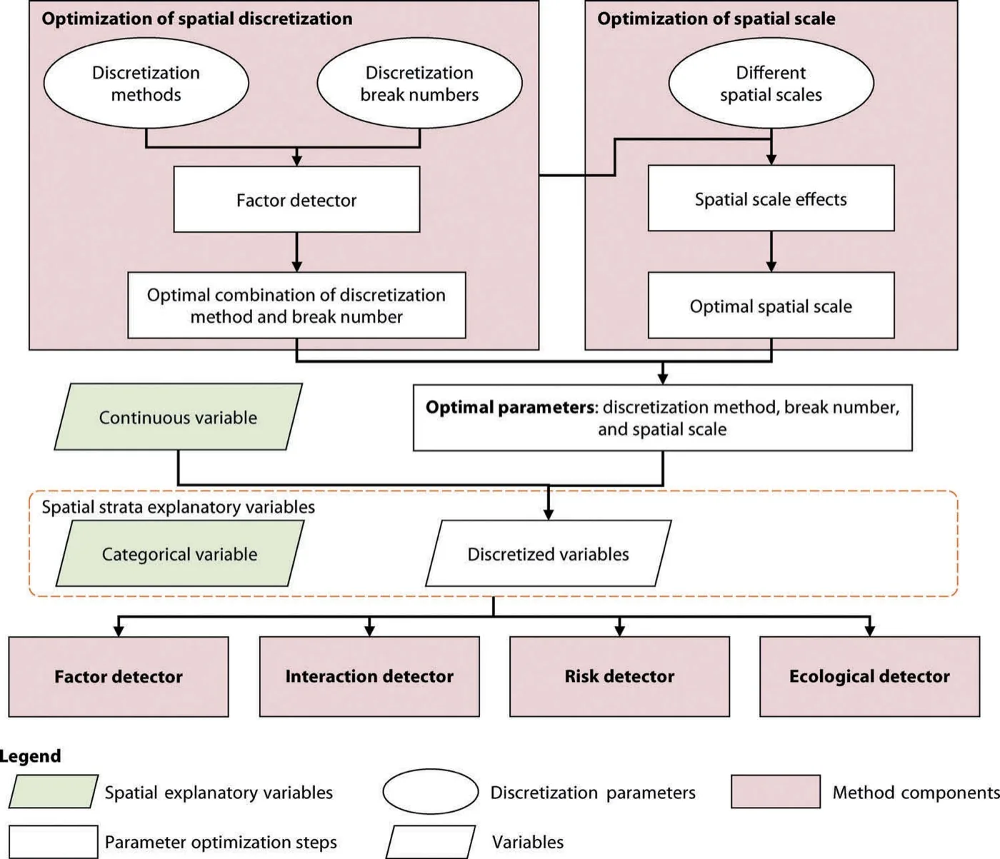
The four detectors
| Detector | Question | Result |
|---|---|---|
| Factor | How much of the spatial variation of y does each factor explain? | q and its p value, per factor |
| Interaction | Do two factors together explain more than each alone? | q of the two factors overlaid, and the type of interaction |
| Risk | In which strata of a factor is y high or low, and do the strata differ? | Mean of y per stratum with its 95% interval; a t test for each pair of strata |
| Ecological | Does one factor explain significantly more than another? | Y or N for each pair of factors |
When to use it
- You want to rank candidate drivers of a spatial variable without assuming a linear relation: q only asks whether y differs between strata.
- Your factors mix numbers and categories.
- You want to know where y is high or low along each factor (the risk detector), which is often the finding readers remember.
Where it has been used
| Field | Response y | Spatial unit | Study |
|---|---|---|---|
| Vegetation change | Change of NDVI | Grid cell | Song et al. (2020) |
| Road infrastructure | Pavement deflection and damage | 1 km road segment | Song et al. (2018) |
| Public health | Incidence of H1N1 flu | Region | Example data of the R package GD |
Any table of spatial units with one numeric response and a mix of continuous and categorical factors fits.
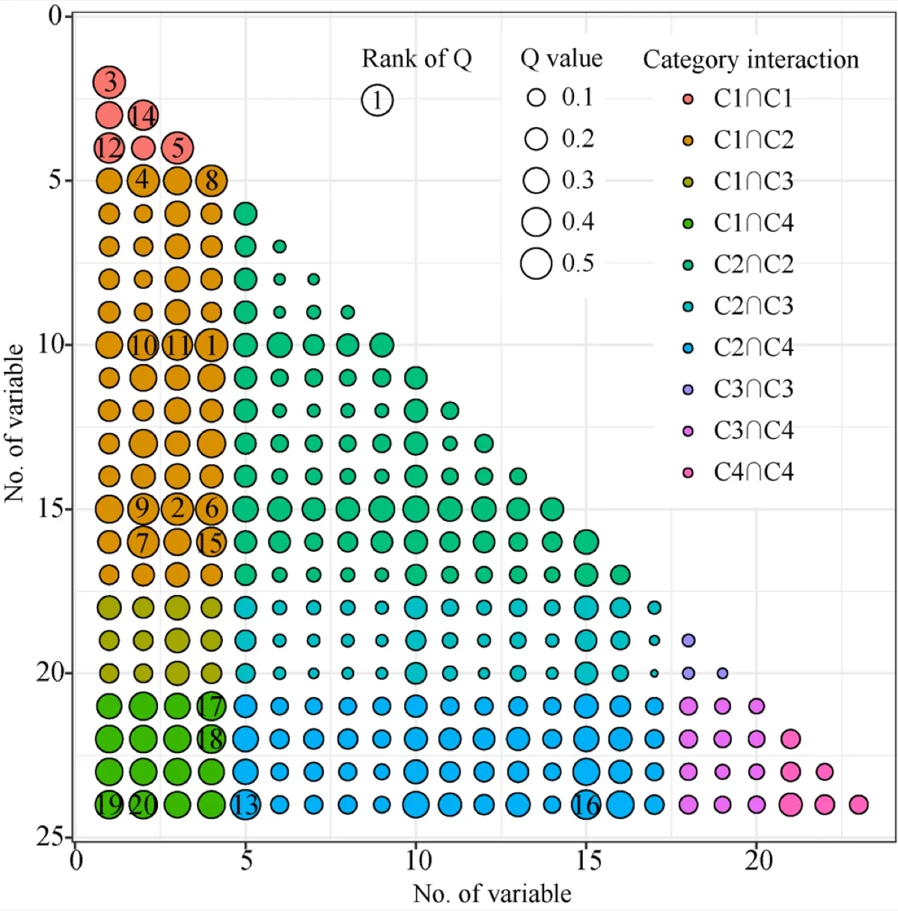
Keep in mindq measures association between the pattern of a factor and the pattern of y. It does not give the direction of an effect and does not show causation. The direction comes from the risk means.
2In Heterra
2.1 Prepare your data
One layer (points, polygons or grid cells) or one table. Each row is a spatial unit. The file can be a shapefile, GeoPackage, GeoJSON or CSV (Part 1 shows how to add data).
| Field | Type | In the example |
|---|---|---|
| Response y | Number | NDVIchange |
| Continuous factors | Numbers, to be discretized | Tempchange, Precip, GDP, Popdensity |
| Categorical factors | Text classes or integer codes | Climzone, Mining |
| Boundary (optional) | A polygon layer | opgd_boundary: the outline drawn on the maps in the charts. It changes no result. |
At least one factor of either kind is needed. The example has 713 simulated cells, so its numbers illustrate the tool and do not describe a real study.
2.2 Run the example, step by step
Open the tool from the Toolbox (Spatial heterogeneity → OPGD), click Tutorial, then Load Example. The cells and the boundary appear on the map, and the panel on the right is filled in for you.
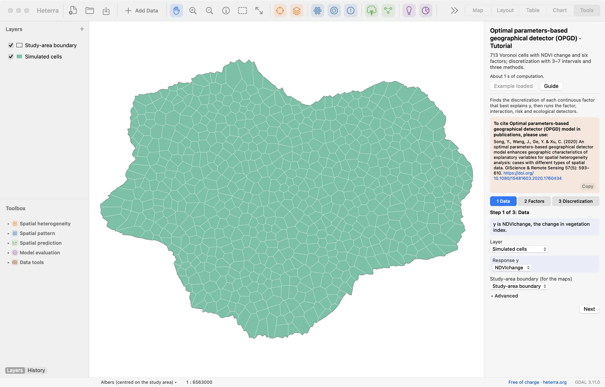
The panel has three steps. Next moves on; Run appears at the last step, because only that step computes.
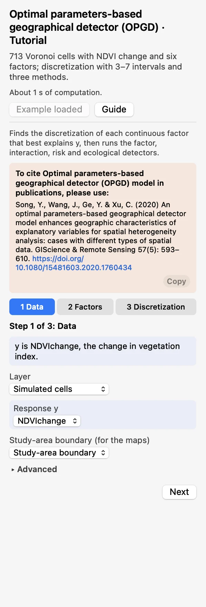
DataChoose the layer and the Response y:NDVIchange. The boundary is optional.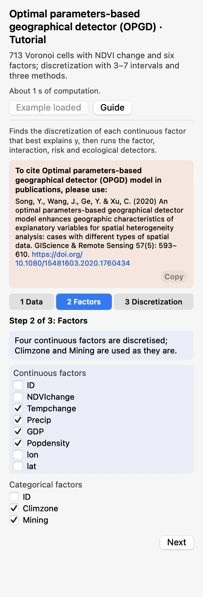
FactorsTick the continuous factors (to be discretized) and the categorical factors (used as they are).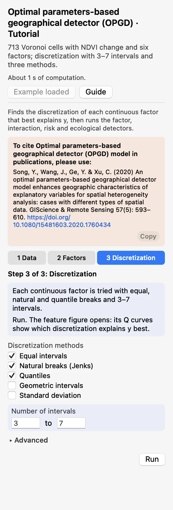
DiscretizationKeep equal, natural and quantile breaks and 3 to 7 intervals. Click Run.
The run takes well under a second. The Chart page opens with the feature figure, and the panel lists every result under Outputs: tables first, then figures. A green line says that the results match the reference results computed with R.
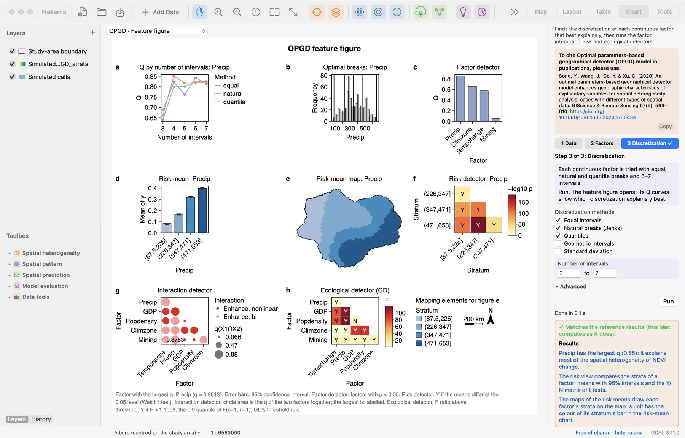
2.3 With your own data
- Add your layer (Add Data), open OPGD from the Toolbox and choose the layer in step 1.
- Decide for each factor whether it is continuous or categorical. An integer code such as a soil class is categorical, even though it is a number.
- Start with the default discretization (equal, natural and quantile breaks, 3 to 7 intervals). With more than about 20,000 rows, untick natural breaks, which are slow at that size.
- Rows with a missing value in y or in any chosen factor are left out. At least 30 complete rows are needed.
- A categorical factor needs at least two categories. Text categories are ordered alphabetically, numeric codes numerically.
- A method and number of intervals that cannot be computed for a factor is skipped with a warning. The run stops only if nothing works for a factor.
- Column names and category values are best written with English letters, digits and underscores.
3Reading the results
Read the results in this order: the discretization first (is it sensible?), then the factor detector (what matters?), then the risk detector (in which direction?), and last the interaction and ecological detectors (how do the factors compare and combine?).
3.1 Optimal discretization
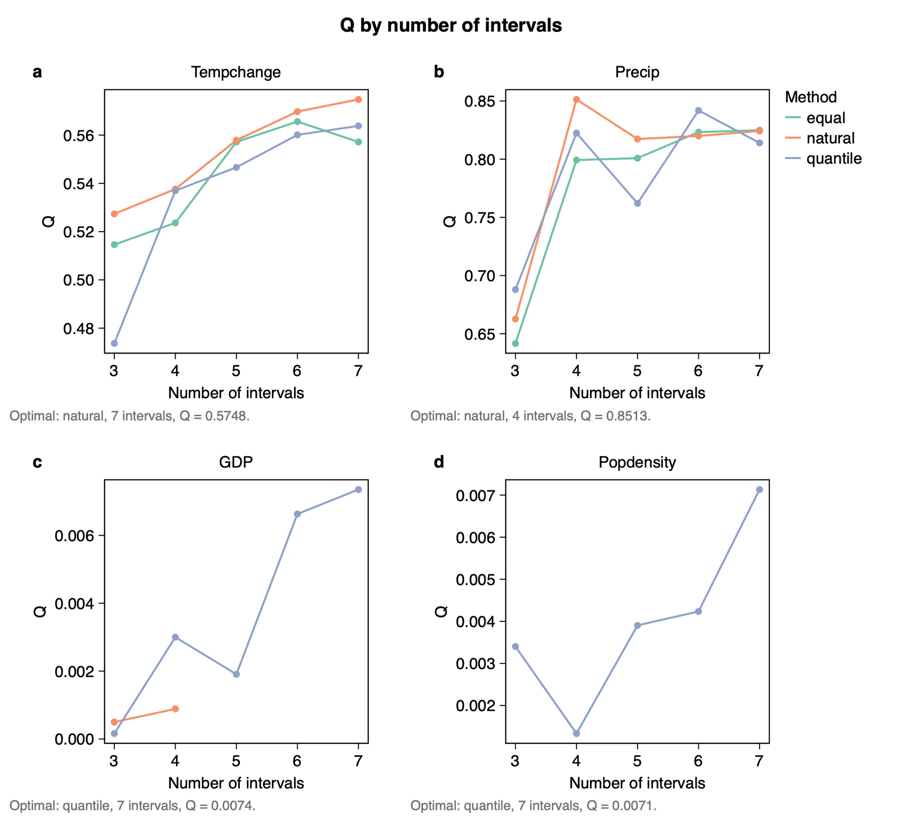
What it shows. q for every method and number of intervals that was tried. The combination with the largest q is kept. The table Optimal discretization lists it for each factor:
| Factor | Method | Intervals | q |
|---|---|---|---|
| Tempchange | natural | 7 | 0.575 |
| Precip | natural | 4 | 0.851 |
| GDP | quantile | 7 | 0.007 |
| Popdensity | quantile | 7 | 0.007 |
How to read it. q usually rises with the number of intervals, so look at the shape of the curve as well as its top. For Precip, q jumps from about 0.66 at 3 intervals to 0.85 at 4 and then stays near 0.82: four intervals are enough. When the largest q sits at the upper limit you set (7 here, as for Tempchange), the limit decided the answer; try a wider range to see whether q keeps rising or levels off.
The figure Optimal breaks draws the chosen breaks on the histogram of each factor, and the run adds fields named <factor>_strata to a copy of the layer, so that the strata can be mapped.
"Continuous factors were discretized with the optimal parameters-based geographical detector (Song et al. 2020): equal, natural and quantile breaks with 3 to 7 intervals were compared, and the combination with the largest q was used for each factor (Table X)."
3.2 Factor detector
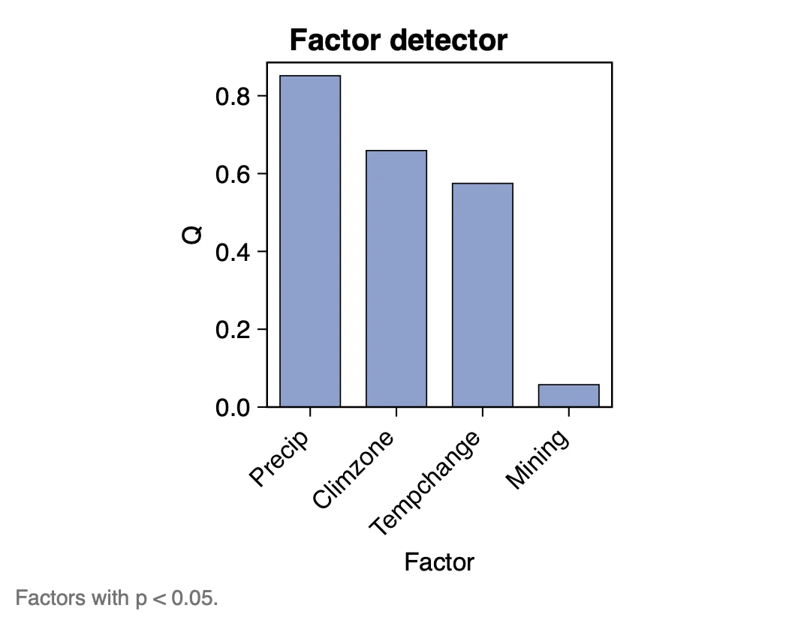
| Factor | q | p |
|---|---|---|
| Precip | 0.851 | < 0.001 |
| Climzone | 0.659 | < 0.001 |
| Tempchange | 0.575 | < 0.001 |
| Mining | 0.057 | < 0.001 |
| GDP | 0.007 | 0.79 |
| Popdensity | 0.007 | 0.69 |
How to read it. q is the factor's explanatory power: Precip explains 85% of the spatial variance of NDVI change, GDP less than 1%. Analyse q first. The p value says whether q differs from zero under the chosen discretization; with many units a small q can still be significant (Mining: q = 0.06, p < 0.001), so report both and judge importance by q.
"Precipitation has the largest q (0.85): it explains the largest share of the spatial pattern of NDVI change, followed by climate zone (0.66) and temperature change (0.57). GDP and population density are not significant at the 0.05 level."
3.3 Risk detector
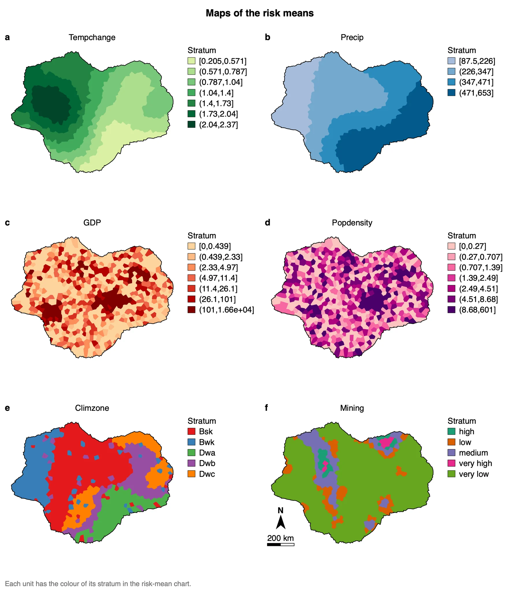
What it shows. The Risk means charts give the mean of y in each stratum with its 95% confidence interval; the maps show where those strata lie. For Precip:
| Stratum of Precip | Units | Mean NDVI change | 95% interval |
|---|---|---|---|
| [87.5, 226] | 115 | 0.085 | 0.073 to 0.096 |
| (226, 347] | 244 | 0.165 | 0.160 to 0.171 |
| (347, 471] | 177 | 0.318 | 0.310 to 0.326 |
| (471, 653] | 177 | 0.398 | 0.391 to 0.404 |
How to read it. This is where the direction appears: NDVI change rises steadily with precipitation. The Risk detector chart is a matrix of Welch t tests between strata: Y means that the two strata's means differ at the 0.05 level. A row of N between neighbouring strata suggests that those intervals could be merged.
"Mean NDVI change increases across the four precipitation strata, from 0.09 where precipitation is below 226 to 0.40 where it is above 471, and all pairs of strata differ significantly (Welch t test, p < 0.05)."
3.4 Interaction detector
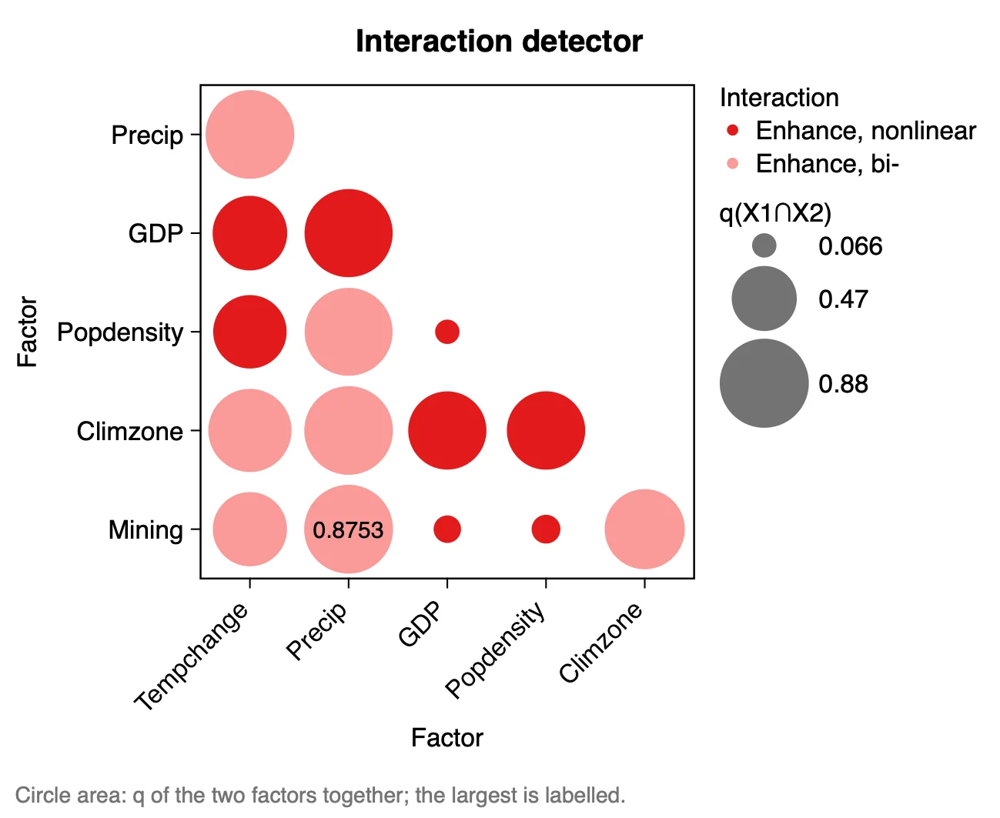
What it shows. The two factors' strata are overlaid and q is computed for the combined strata, q(X1∩X2). It is compared with the two single values:
| Type | Condition |
|---|---|
| Weaken, nonlinear | q(X1∩X2) < min(q1, q2) |
| Weaken, uni- | min(q1, q2) < q(X1∩X2) < max(q1, q2) |
| Enhance, bi- | max(q1, q2) < q(X1∩X2) < q1 + q2 |
| Independent | q(X1∩X2) = q1 + q2 |
| Enhance, nonlinear | q(X1∩X2) > q1 + q2 |
How to read it. Always read an interaction together with the two factors' own q. The largest value here is Precip ∩ Mining (0.875), but Precip alone already reaches 0.851: Mining adds little. A pair of weak factors can be "Enhance, nonlinear" and still explain almost nothing (GDP ∩ Popdensity: 0.066).
"The strongest interaction is precipitation ∩ mining (q = 0.88, bi-factor enhancement), only slightly above precipitation alone (0.85). Every pair of factors enhances each other; none is independent or weakening."
3.5 Ecological detector
What it shows. For each pair of factors, whether one explains significantly more than the other. The table gives two definitions in use: the GD package's (Y or N: Y when the ratio of the two values reaches the threshold of the F distribution, 1.10 with 713 units) and the gdverse package's (F, p, Yes or No). They often disagree, so say which one you report.
How to read it. Use it to support a ranking: "Precip explains more than Tempchange" is backed by Y in that cell. GDP against Popdensity is N: their q values (both 0.007) cannot be told apart.
3.6 The feature figure
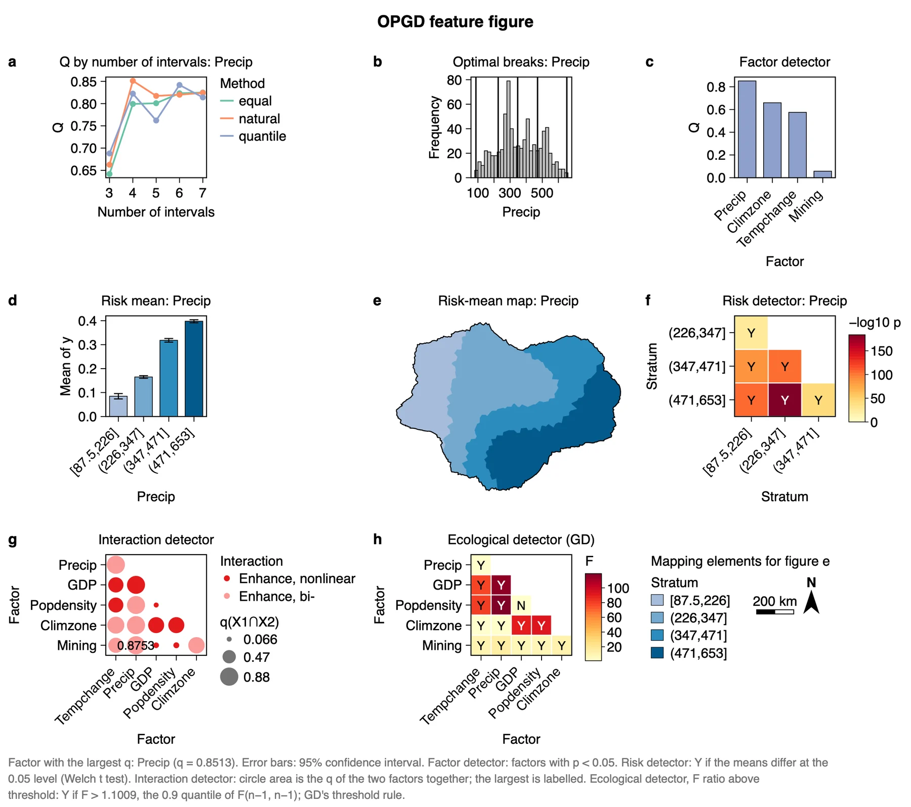
The feature figure puts the main results on one page and is made for a paper's results section. Export it from the Chart page as PDF or SVG (vector) or PNG at 300 dpi; Data CSV saves the numbers behind it. Export results in the panel writes a report of the run with the method, the steps, the figures and the tables (Part 1).
3.7 Reading the results together
The detectors tell one story from four sides: which factors matter (factor detector), with which other factors (interaction detector), where y is high or low (risk detector) and how surely one factor outranks another (ecological detector). Read them in this order:
- Optimal discretization: check that every continuous factor has a clear best combination.
- Factor detector: the ranking and its significance.
- Ecological detector: which gaps in the ranking are real.
- Interaction and risk detectors: the pairs and the strata that carry the story. A factor with a small q of its own can still matter through an interaction.
What OPGD is notIt is not a prediction model: it gives no coefficients and no predicted values. It measures how much of the spatial pattern of y the strata of a factor explain. For a map of predicted values, use a method of Part 4.
3.8 From the results to a manuscript
| Section | What to write | From Heterra |
|---|---|---|
| Methods | The q statistic; the discretization methods and the numbers of intervals compared; the four detectors | The settings of the run (in the exported report); table Optimal discretization |
| Results | Follow the order of the analysis: discretization, ranking of the factors, interactions, risk strata, significance of the differences. One finding per subsection, each with its q | Figure Feature figure or the single figures; tables Factor detector and Interaction detector |
| Discussion | Which factors lead together and which differ; the mechanism behind the strongest interaction; whether the ranking holds at another unit size | Table Ecological detector; a second run on coarser or finer units |
- Do not compare q values obtained with different search settings: more intervals explain more variance by construction. Fix the methods and the range of intervals, and let OPGD choose inside them.
- Every stratum needs enough units. With a small sample, lower the largest number of intervals.
- A large q is an association of patterns, not a cause, and has no direction.
4Exercises
Exercises 1 to 3 use the example. Exercise 4 is for your own data.
Exercise 1Read
Run the example with its settings. Which factor has the second-largest q, and is it continuous or categorical? Which two strata of Climzone have the lowest and the highest mean NDVI change?
Answer
Climzone (q = 0.659), a categorical factor. In the Risk means table, Bwk has the lowest mean (0.108) and Dwc the highest (0.379).
Exercise 2Change a setting
In step 3, tick only Equal intervals and run again. What are the optimal number of intervals and q of Precip now? What does the difference from the first run tell you?
Answer
With equal intervals only, the largest q of Precip is 0.825 at 7 intervals, against 0.851 with natural breaks at 4 intervals. A better method reaches a higher q with fewer strata: comparing methods is the point of OPGD. Both runs stay in History, so you can open either.
Exercise 3Interpret
A colleague writes: "GDP and population density interact strongly (nonlinear enhancement), so their joint effect on NDVI change is important." Check this against the interaction table. Is the sentence justified?
Answer
No. The type is "Enhance, nonlinear" because 0.066 is larger than 0.007 + 0.007, but the two factors together still explain under 7% of the variance. The type describes how q combines, not how large it is.
Exercise 4Your data
Run OPGD on your own layer with at least three factors. Write three sentences for a results section: one on the ranking of the factors (q and p), one on the direction of the strongest factor (risk means), and one on the strongest interaction compared with its two factors alone. Export the feature figure as PDF.
Checklist
Does each sentence give a number? Did you check that the optimal number of intervals is not simply the upper limit you set? Did you say which ecological-detector definition you used, if you report it?
References
- Song, Y., Wang, J., Ge, Y. & Xu, C. (2020). An optimal parameters-based geographical detector model enhances geographic characteristics of explanatory variables for spatial heterogeneity analysis: cases with different types of spatial data. GIScience & Remote Sensing 57(5): 593–610. doi:10.1080/15481603.2020.1760434
- Song, Y., Wright, G., Wu, P. et al. (2018). Segment-based spatial analysis for assessing road infrastructure performance using monitoring observations and remote sensing data. Remote Sensing 10(11): 1696. doi:10.3390/rs10111696
- Wang, J.-F. et al. (2010). Geographical detectors-based health risk assessment and its application in the neural tube defects study of the Heshun Region, China. International Journal of Geographical Information Science 24(1): 107–127.
- R package GD: cran.r-project.org/package=GD. Heterra's results match GD 10.9.
Heterra guide, for version 1.6.0. © 2026 Yongze Song. Documentation and tutorial data: CC BY 4.0.